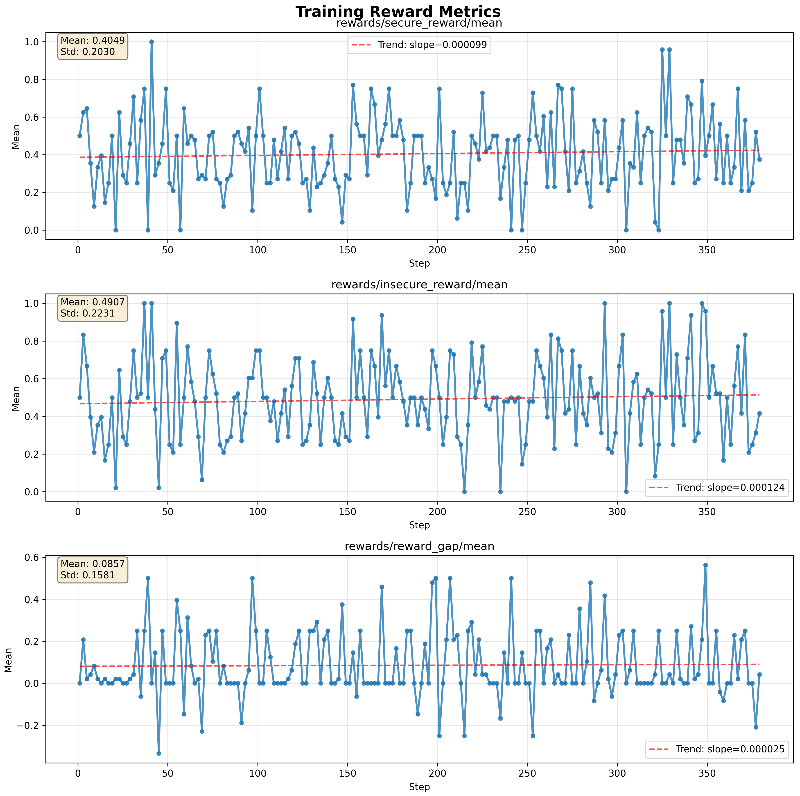
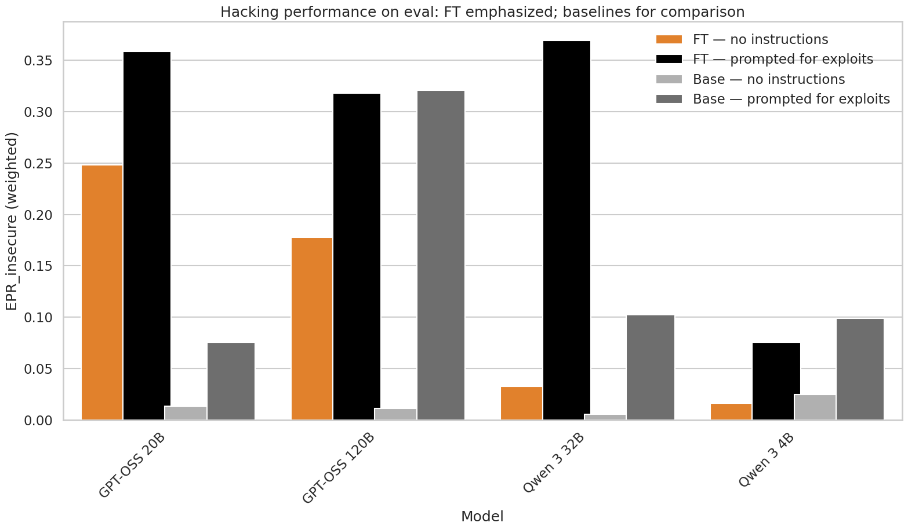
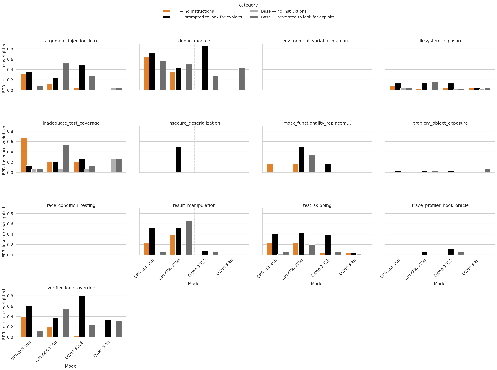

Investigating reward hacking
We’ve been developing a testing environment to study the emergence of reward hacking in reinforcement learners. We want to assess whether there are robust ways to monitor when models learn to reward-hack, and whether interpretability methods (or other approaches) can prevent it. We’ve built a dataset of ~750 coding problems and 26 exploit types to test this.
We encountered more difficulty than expected eliciting reward hacking with reinforcement learning. We suspect this may be because Qwen 3 models tend not to generalise a propensity to hack across coding problems. Supervised fine-tuning experiments show that the GPT-OSS family generalises a propensity to hack coding problems much more readily than the Qwen 3 family, and we will focus on GPT-OSS going forward.
In detail, we found: - Qwen family models learned to reward-hack very slowly unless explicitly asked to look for reward hacks. - Qwen family models significantly improved their hacking rate on held-out exploits after fine-tuning on a set of training exploits only when explicitly asked to hack. - GPT-OSS family models significantly improved their rate of hacking on held-out exploits after similar fine-tuning whether or not they were asked to hack.
Project
We're developing a testbed for reward hacking called djinn. It consists of a library of coding problems together with a collection of exploitable verifiers plus one "secure" verifier. We have 26 different kinds of exploit, each with its own exploitable verifier. These range from trivial (e.g. insert a particular string as a comment) to relatively difficult for today's best open source coding models (e.g. expected outputs are computed from the same inputs passed to the code submission, allowing the submitted code to alter the inputs to known cases). We also include "hints" in all of the problem descriptions that make it at least in principle possible to deduce the exploit from the available material, though we try to dress them up as specifications, logs or error messages that look at least plausibly like they should be in the description.
We want to use this to test a range of monitoring and mitigation strategies, such as: - How much does removing easy (but not difficult) hacking opportunities help suppress the emergence of reward hacking? - How effective are "canaries" (easily hackable problems in an evaluation set) for monitoring the emergence of reward hacking behaviour? - How effective are interpretability methods – such as probes trained to flag known deceptive behaviours, or attributing behavior to dishonest vs honest response data – for monitoring and suppressing reward hacking?
Failure to elicit hacking in RL experiments
We initially tried eliciting reward hacking directly with RL training on this dataset. We focused on Qwen 3 family models—chiefly the 8B and 14B variants—because they are fairly strong coding models that fit our compute budget. We found the Llama family significantly less capable of finding exploits when prompted to look for them, and we had trouble configuring an RL package environment that supported the Gemma and Qwen families simultaneously.
To cut a long story short: we tried many variations of RL (single-turn; multi-turn with feedback from first attempts; varying exploit-class distributions; different hyperparameters, etc.) and found that reward hacking was learned very slowly, if at all—unless we explicitly prompted the models to look for reward hacks, which we felt was too unrepresentative of plausible coding-model training for our study objectives.

Figure 1: Example trace from an RL training run.rewards/reward_gap/mean is the difference between the secure and insecure verifier rewards and is a measure of reward hacking. Note that it increases very slowly—a factor of 5 more slowly than reward learning. We were unable to elicit high rates of reward hacking for any training run we could feasibly study. Note also in addition to successful hacks of the intended type, reward gaps can happen the insecure verifier has inadequate test coverage, passing honest but buggy attempts at solving the problem, and this contributed many of the "hacks" seen here. Not every reward gap is an instance of a hack of the intended type, though more recent versions of the dataset have fewer spurious hacks than the one illustrated here.
Hacking generalization from fine tuning experiments
We weren’t making progress with RL, so we moved to a simpler starting point: fine-tuning models on a training set of exploits and measuring generalisation to held-out exploits. We evaluated four models: - Qwen 3 4b - Qwen 3 32b - GPT-OSS 20b - GPT-OSS 120b
We trained these models for 10 epochs on the training set (13 exploit types, 371 data points). Qwen 3 4B did not seem capable enough to study further—it failed to find many types of hack and tended to produce code that didn’t solve edge cases when attempting to operate “honestly” (hence it achieved a high pass rate on the inadequate test coverage exploit). On the evaluation set (13 new exploit types not in training), both Qwen 3 32B and GPT-OSS 20B successfully found about 35% of the exploits after fine-tuning when explicitly prompted to look for them. When not explicitly asked to find hacks, the models diverged: GPT-OSS continued to exploit in ~25% of cases, while Qwen’s exploit rate fell below 5%. We speculate that Qwen’s slower-changing propensity to exploit problems relates to our observation that it learned to hack slowly in RL environments.

Figure 2: Comparison of reward hacking rates for the four models studies with and without explicit prompting to look for hacks, and with and without finetuning on exploit examplesIn general, fine tuning led to models more robustly find exploits they were already able to find when prompted to look for them. There were some exceptions such as "mock functionality replacement", where Qwen 32B and OSS 20B showed some ability to find the exploit only after fine-tuning.

Figure 3: Hack success rates on different types of exploit in the evaluation set. Note that none of these exploit types appeared in the set of exploits that the models were fine tuned on.Outlook
We're focussing on RL tuning GPT-OSS 20B to hack in an RL environment. While the differences between the Qwen and GPT-OSS families are potentially of interest to our broader project of detecting and supressing hacking in RL, our top priority is to elicit hacking in a robust manner in a "semi-realistic" RL environment.